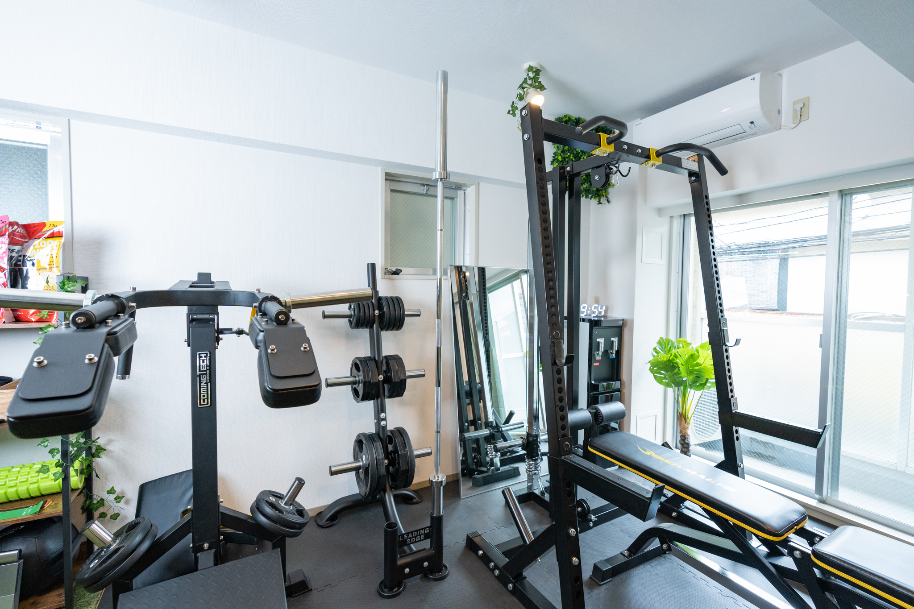

産後ダイエット、いつから始めていい？医師確認＆体験談

「産後の体型、戻るのかな」「いつからジムに行っていいの?」── こんな不安を抱える30〜40代ママは、私のまわりにも本当に多いです。
WITHJ代表として65店舗のパーソナルジム運営に関わってきた私は、これまで数百名の産後ママの「ジム復帰タイミング」を見てきました。その経験から、産後ダイエットを安全に・効果的に始めるための判断基準を、正直にお伝えします。
結論から言うと
産後ダイエットを始められるのは、最短で「産後1ヶ月健診で医師の許可が出てから」、現実的には「産後2〜3ヶ月目」がおすすめです。
ただし、これはあくまで一般論。帝王切開・授乳の有無・産後の回復スピードによって、適切な開始時期は人それぞれ違います。
最も大事な判断軸は3つだけです:
- 1ヶ月健診で医師から運動許可が出ているか
- 悪露が完全に止まっているか
- 無理なく日常動作ができているか
この3つがクリアできていれば、軽度な運動から徐々に始められます。
なぜそう言えるのか
産婦人科医療の一般的なガイドラインから
産後の身体は、出産という大きな負荷から回復している最中です。一般的に「産褥期(さんじょくき)」と呼ばれる産後6〜8週間は、子宮や骨盤周りが元の状態に戻っていく重要な期間です。
この時期にハードな運動を始めると:
- 子宮復古不全
- 骨盤底筋群のダメージ蓄積
- 出血の再発
- 関節の過剰な動きによる怪我
といったリスクがあります。だから、「1ヶ月健診で医師の許可」が一つ目の絶対条件になります。
65店舗の現場で見えてきた「成功パターン」
私たちが運営に関わる65店舗のパーソナルジムで、産後ママの会員さんを観察してきた結果、結果を出しているママには共通点がありました。
| パターン | 開始時期 | 結果 |
|---|---|---|
| 焦って早く始めた人 | 産後1ヶ月以内 | 怪我・体調不良で中断率高 |
| 推奨タイミング | 産後2〜3ヶ月目 | 継続率高・3ヶ月で平均 -4kg |
| ゆっくり派 | 産後6ヶ月以降 | 結果は出るがモチベ維持が課題 |
つまり、産後2〜3ヶ月目スタートが「安全性」と「結果」のバランスが最も良いということが、実データから見えてきました。
帝王切開の場合は別軸で考える
これは特に重要なので明記します。
帝王切開で出産された方は、産後3〜6ヶ月まで腹筋に直接負荷をかけるトレーニングは避けるのが一般的です。傷の癒合状態を主治医に確認してから、ジム側にも事前に伝えてください。
NEXUSパーソナルジムでは、帝王切開の経過に応じて腹筋メニューを段階的に組み立てるプログラムを用意しています。
具体的な事例
事例1: A様(34歳・1児のママ・産後2ヶ月でスタート)
- 出産形態: 自然分娩
- 開始時期: 産後2ヶ月(1ヶ月健診で許可済)
- 頻度: 週1回 × 3ヶ月
- 結果: 体重 62kg → 54kg(-8kg)
- 大変だったこと: 「夜間授乳で寝不足だった時期に、無理せず週1で続けたのが良かった」
A様は産後1ヶ月健診で医師から「ウォーキング程度ならOK」と言われ、産後2ヶ月でパーソナルジム見学に来られました。最初の1ヶ月は骨盤底筋トレーニングと姿勢改善中心。徐々に有酸素と軽い筋トレを加えていきました。
事例2: B様(37歳・2児のママ・帝王切開後3ヶ月でスタート)
- 出産形態: 帝王切開
- 開始時期: 産後3ヶ月(主治医の許可確認済)
- 頻度: 週1回 × 4ヶ月
- 結果: 体重 68kg → 60kg(-8kg)、姿勢の改善が顕著
- 大変だったこと: 「2人目で骨盤周りがガタガタだったので、最初は骨盤調整から始めた」
B様は帝王切開だったため、腹筋系のメニューは産後5ヶ月以降から段階的に導入。それまでは下半身と背中、骨盤底筋を中心に組み立てました。
事例3: C様(31歳・1児のママ・焦って失敗した例)
- 出産形態: 自然分娩
- 開始時期: 産後3週間(自己判断)
- 結果: 2週間で悪露の再発、整形外科にもかかり中断
- 学び: 「健診を待たずに始めたのが完全に間違いだった。3ヶ月後に再スタートして成功」
これは反面教師の事例として、許可を得て掲載しています。早く始めれば早く戻るわけではありません。
まとめ：あなたが今やるべきこと
産後ダイエットを始める前に、以下の3つを順番に確認してください。
1. 1ヶ月健診で医師に運動の可否を確認する
「ジムでパーソナルトレーニングを始めたい」と具体的に伝えること。
2. 自分の出産形態に合った開始時期を見極める
- 自然分娩: 産後2〜3ヶ月目を目安に
- 帝王切開: 産後3〜6ヶ月目を目安に
- いずれも医師の確認必須
3. 「産後対応」ができるジムを選ぶ
骨盤底筋・産後特化メニューがあるか、託児付きか、女性トレーナーの選択肢はあるか。
NEXUSパーソナルジムで産後ダイエットを始める
全国65店舗で展開。産後ママ向けプログラムを用意している店舗多数。
・産後特化メニュー(骨盤底筋・体幹リセット)
・帝王切開後の段階的プログラム
・女性トレーナーの選択可
・一部店舗で託児サービスあり